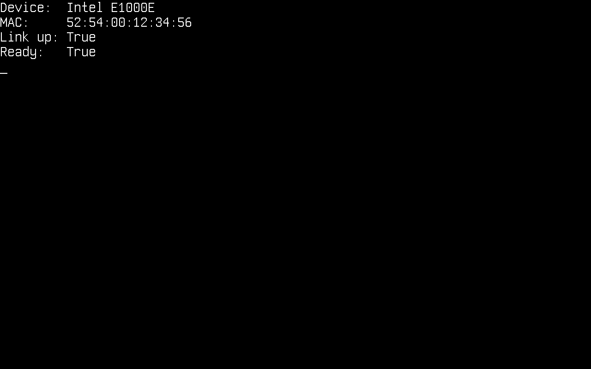
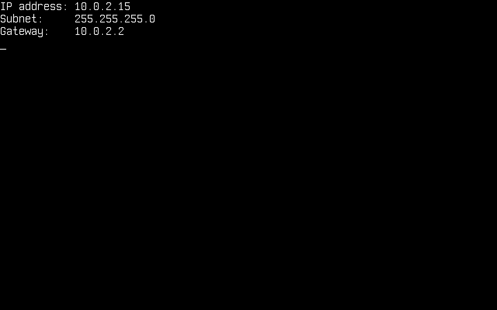
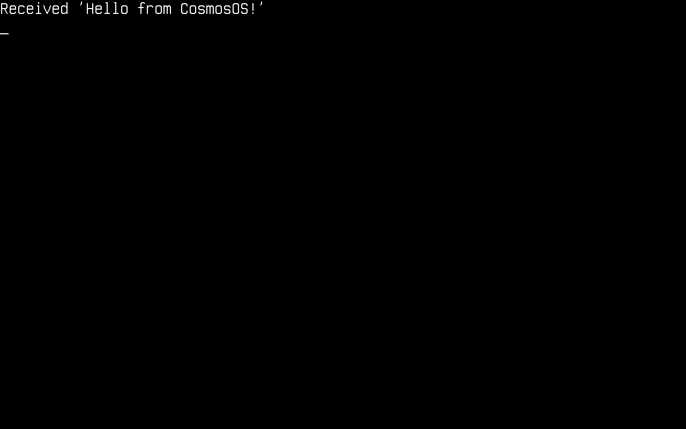
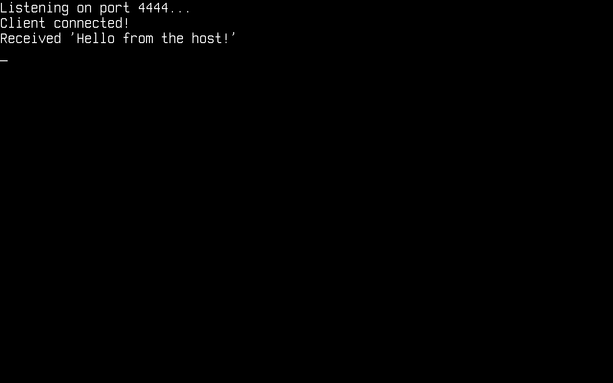
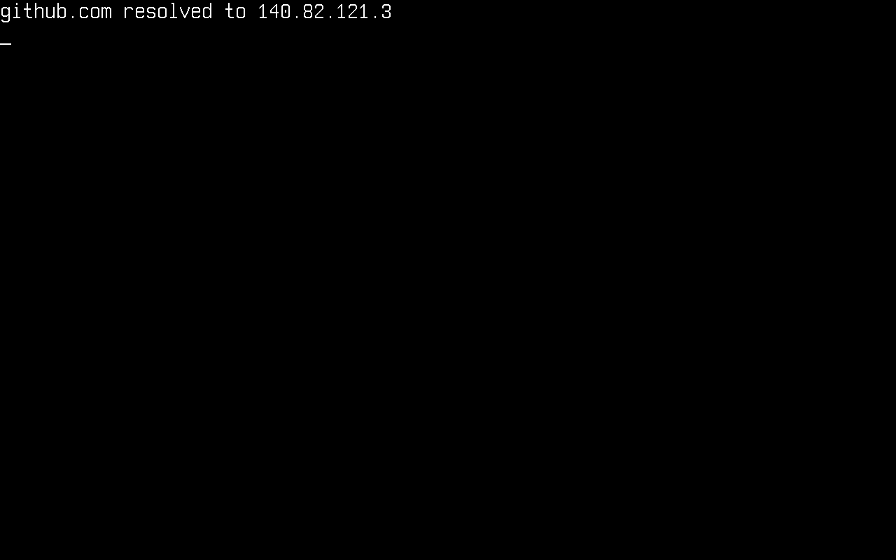

Réseau
Dans cet article, nous verrons le réseau sur Cosmos Gen3 : comment mettre en route la pile réseau, puis envoyer et recevoir des paquets. Les protocoles disponibles sont ARP, IPv4, IPv6, UDP, TCP, DHCP et DNS.
Les principales différences si vous venez de Gen2 :
| Gen2 | Gen3 | |
|---|---|---|
| TCP | System.Net.Sockets standard (via des plugs) |
System.Net.Sockets standard (via des plugs) |
| UDP | Classe UdpClient propre à Cosmos |
System.Net.Sockets.UdpClient standard (via des plugs) |
| DHCP | Classe cliente Cosmos | Classe cliente Cosmos (Cosmos.Kernel.System.Network) |
| DNS | Classe cliente Cosmos | System.Net.Dns standard (via des plugs), ou le DnsClient de Cosmos |
| Pilotes de carte réseau | RTL8168, E1000, PCNET | Intel E1000E via le kit de pilotes (toute machine dotée d'un nœud hôte PCI ; la carte réseau q35 par défaut de QEMU sur x64), qui lie aussi la carte e1000 8254x de QEMU et VirtualBox (82540EM) et de VMware (82545EM), virtio-net via le kit de pilotes (PCI sur les deux architectures, MMIO sur ARM64) |
Aucun de ces protocoles n'implémente toutes les fonctionnalités de sa RFC. Si vous trouvez des bugs ou quelque chose d'anormal, merci de soumettre une issue sur notre dépôt.
Activer le réseau dans votre noyau
La prise en charge du réseau dépend d'un commutateur de fonctionnalité. Assurez-vous que le .csproj de votre noyau ne la désactive pas (sa valeur par défaut est true) :
<PropertyGroup>
<CosmosEnableNetwork>true</CosmosEnableNetwork>
</PropertyGroup>
Au démarrage, une carte réseau parvient à NetworkManager par le kit de pilotes, quelle qu'elle soit ; les deux pilotes sont livrés dans Cosmos.Kernel.Drivers, que tout noyau embarque. Une Intel E1000E est liée par E1000EDriver : le pilote hôte PCI publie la fonction, le pilote l'initialise et publie une interface nommée e1000e, puis le consommateur du gestionnaire l'enregistre (Écrire un pilote). Un périphérique virtio-net est lié par VirtioNetDriver sur l'un ou l'autre transport : le pilote de transport virtio PCI publie un nœud virtio sous la fonction, le pilote de transport virtio MMIO en publie un sous l'emplacement de la machine virt, et le même pilote feuille lie les deux et publie une interface nommée virtio-net (Périphériques virtio). La première interface publiée par un pilote du kit est l'interface principale, dans l'ordre où l'étape des pilotes les lie. Sur x64, cosmos run n'a besoin d'aucune option supplémentaire : la carte réseau q35 par défaut de QEMU est une e1000e. Sur ARM64, attachez explicitement une carte réseau virtio :
$ cosmos run # x64: default e1000e NIC, user-mode networking
$ cosmos run --nic virtio-net-pci # x64 or arm64: virtio NIC over PCI
$ cosmos run --nic virtio-net-device # arm64: virtio NIC over MMIO
Une fonction virtio PCI délivre ses interruptions sous forme de messages MSI-X, que l'ITS du GICv3 route sur ARM64 (-M virt,gic-version=3) ; cosmos run lance ARM64 avec le GICv2 par défaut de QEMU, qui n'a pas d'ITS : la carte réseau PCI y est donc publiée sans entrée d'interruption et VirtioNetDriver la fait fonctionner en scrutation, en vidant sa file de réception toutes les 50 ms. --nic virtio-net-pci fonctionne donc aussi avec le lancement ARM64 par défaut, tandis que la carte réseau MMIO fonctionne sur sa ligne GIC et constitue là le choix piloté par interruptions.
Avec le réseau en mode utilisateur de QEMU (le mode par défaut), votre noyau vit dans un réseau privé 10.0.2.0/24 : l'hôte est joignable à l'adresse 10.0.2.2, le serveur DHCP intégré de QEMU attribue les adresses, et le trafic UDP/TCP sortant est traduit par NAT vers le réseau réel.
Voici les directives using sur lesquelles s'appuient les extraits ci-dessous :
using System.Net;
using System.Net.Sockets;
using System.Text;
using Cosmos.Kernel.System.Network;
using Cosmos.Kernel.System.Timers;
Le périphérique réseau
NetworkManager possède les cartes réseau détectées. Vérifiez qu'un périphérique est présent et prêt avant de configurer quoi que ce soit :
if (NetworkManager.DeviceCount > 0)
{
Console.WriteLine("Device: " + NetworkManager.Name);
Console.WriteLine("MAC: " + NetworkManager.MacAddress?.ToString());
Console.WriteLine("Link up: " + NetworkManager.LinkUp);
Console.WriteLine("Ready: " + NetworkManager.Ready);
}
Ces propriétés décrivent l'adaptateur principal, celui qu'utilise l'anneau supporté quand aucun autre n'est désigné. Avec plusieurs cartes réseau, énumérez-les et choisissez-en une autre comme principale :
for (int i = 0; i < NetworkManager.DeviceCount; i++)
{
NetworkAdapter adapter = NetworkManager.GetAdapter(i);
Console.WriteLine($"[{i}] {adapter.Name} {adapter.MacAddress} link={adapter.LinkUp}");
}
NetworkAdapter second = NetworkManager.GetAdapter(1);
if (second.IsValid)
{
NetworkManager.Primary = second;
}
Un NetworkAdapter est un handle, pas le périphérique : il porte l'index d'enregistrement, si bien qu'un handle construit par défaut ne désigne rien et que IsValid vaut false. GetAdapter renvoie un tel handle pour un index qu'aucun périphérique n'occupe, c'est pourquoi l'affectation ci-dessus est protégée : le setter de Primary lève ArgumentException sur un handle qui ne désigne rien, et QEMU ne donne par défaut qu'une seule carte réseau au noyau, si bien que GetAdapter(1) n'y désigne rien.

Configurer IPv4
Comme sur tout système d'exploitation, le noyau a besoin d'une configuration IPv4 (adresse, masque de sous-réseau, passerelle) avant de pouvoir communiquer avec le réseau. Elle peut être obtenue dynamiquement par DHCP ou définie manuellement.
Il n'y a pas d'étape distincte d'initialisation de la pile. C'est la configuration d'une adresse qui met la pile en route : elle associe l'adresse et l'adresse MAC au périphérique. NetworkStack.RemoveAllConfigIP() l'annule.
Dynamiquement par DHCP
DhcpClient.SendDiscoverPacket() effectue tout l'échange DISCOVER → OFFER → REQUEST → ACK et applique la configuration obtenue. Elle renvoie le nombre de millisecondes écoulées, ou -1 si le délai expire :
DhcpClient dhcpClient = new();
if (dhcpClient.SendDiscoverPacket() != -1)
{
IPConfig? config = NetworkManager.Primary.IPConfig;
if (config is not null)
{
Console.WriteLine("IP address: " + config.Address.ToString());
Console.WriteLine("Subnet: " + config.SubnetMask.ToString());
Console.WriteLine("Gateway: " + config.DefaultGateway.ToString());
}
}
else
{
Console.WriteLine("DHCP timed out");
}

Manuellement
if (!IPConfig.Enable(
new Address4(192, 168, 1, 69), // local address
new Address4(255, 255, 255, 0), // subnet mask
new Address4(192, 168, 1, 254))) // gateway
{
Console.WriteLine("No adapter to configure");
}
Cela configure l'adaptateur principal. Pour en configurer un en particulier, passez son handle. Enable renvoie false quand le handle ne désigne aucun périphérique, ce que vous obtenez avec un index situé au-delà du dernier adaptateur :
NetworkAdapter second = NetworkManager.GetAdapter(1);
if (second.IsValid
&& IPConfig.Enable(second,
new Address4(192, 168, 2, 69),
new Address4(255, 255, 255, 0),
new Address4(192, 168, 2, 254)))
{
Console.WriteLine("Configured the second adapter");
}
DHCP configure un adaptateur à la fois. new DhcpClient() effectue l'échange sur l'adaptateur principal et new DhcpClient(adapter) sur celui que désigne le handle ; dans les deux cas, les autres adaptateurs conservent leur configuration. SendReleasePacket() rend l'adresse de cet adaptateur au serveur et le laisse non configuré :
NetworkAdapter second = NetworkManager.GetAdapter(1);
if (second.IsValid && new DhcpClient(second).SendDiscoverPacket() != -1)
{
Console.WriteLine("Second adapter: " + second.IPConfig?.Address.ToString());
}
Relire la configuration
Chaque adaptateur porte la configuration qui y est en vigueur, ou null tant qu'il n'est pas configuré :
Console.WriteLine(NetworkManager.Primary.IPConfig?.Address.ToString());
Console.WriteLine(NetworkManager.GetAdapter(1).IPConfig?.SubnetMask.ToString());
IPv6
La configuration IPv4 active aussi une adresse IPv6 lien-local sur le périphérique : fe80::/64 avec l'identifiant d'interface dérivé de son adresse MAC (RFC 4291, annexe A). Sur la carte réseau par défaut de QEMU, c'est fe80::5054:ff:fe12:3456. Neighbor Discovery résout les adresses du lien comme ARP le fait pour IPv4, et l'écho ICMPv6 fonctionne dans les deux sens.
Address6? linkLocal = NetworkManager.Primary.LinkLocalAddress; // null until the device is configured
Icmpv6Client ping = new();
ping.Connect(new Address6(0xFEC0_0000, 0, 0, 2)); // QEMU user networking answers on fec0::2
ping.SendEcho();
Cosmos.Kernel.System.Network.EndPoint from = new(Address6.Zero, 0);
int elapsedMs = ping.Receive(ref from, 5000); // -1 on timeout
ping.Close();
| IPv4 | IPv6 | |
|---|---|---|
| Adresse | IPConfig.Enable ou DHCP |
Lien-local, dérivée de l'adresse MAC |
| Résolution | ARP | Neighbor Discovery (sollicitation et annonce) |
| Ping | IcmpClient |
Icmpv6Client |
| UDP et TCP | UdpPacket, TcpPacket |
Les deux mêmes classes, avec une somme de contrôle calculée sur le pseudo-en-tête IPv6 |
| DNS | DnsClient, enregistrements A |
Le même client, enregistrements AAAA |
Ce qu'IPv6 ne couvre pas encore : les adresses au-delà du lien-local (les Router Advertisements sont ignorés, il n'y a ni SLAAC ni DHCPv6, si bien que seules les destinations du lien sont joignables), et AddressFamily.InterNetworkV6 sur les classes de socket .NET.
UDP
UDP passe par la classe .NET standard System.Net.Sockets.UdpClient ; aucune classe propre à Cosmos n'est nécessaire. Cosmos.Kernel.System.Network a son propre UdpClient (le client au niveau des paquets), donc lorsque les deux espaces de noms sont importés, comme plus haut, nommez celui de .NET en entier. Les envois partent immédiatement ; pour les réceptions, scrutez Available (une réception sans rien en attente bloquerait) :
var udpClient = new System.Net.Sockets.UdpClient(4242);
/* Send data: 10.0.2.2 is the host under QEMU user networking */
byte[] message = Encoding.ASCII.GetBytes("Hello from CosmosOS!");
udpClient.Send(message, message.Length, new IPEndPoint(IPAddress.Parse("10.0.2.2"), 4242));
/* Receive data */
IPEndPoint remote = new(IPAddress.Any, 0);
while (udpClient.Available == 0)
{
TimerManager.Wait(100);
}
byte[] data = udpClient.Receive(ref remote);
Console.WriteLine("Received '" + Encoding.ASCII.GetString(data) + "' from " + remote.Address);
udpClient.Close();

Client TCP
TCP passe lui aussi par les classes .NET standard : TcpClient, TcpListener et NetworkStream.
var tcpClient = new TcpClient();
tcpClient.Connect(IPAddress.Parse("10.0.2.2"), 4343);
NetworkStream stream = tcpClient.GetStream();
/* Send data */
byte[] message = Encoding.ASCII.GetBytes("Hello from CosmosOS!");
stream.Write(message, 0, message.Length);
/* Receive data */
while (!stream.DataAvailable)
{
TimerManager.Wait(100);
}
byte[] buffer = new byte[tcpClient.ReceiveBufferSize];
int bytesRead = stream.Read(buffer, 0, buffer.Length);
Console.WriteLine("Received '" + Encoding.ASCII.GetString(buffer, 0, bytesRead) + "'");
tcpClient.Close();
Read attend les données comme dans .NET : il rend la main dès que des octets sont arrivés, et ne renvoie 0 qu'une fois que le pair a fermé la connexion, si bien que la boucle sur DataAvailable est facultative. Définissez ReadTimeout (le ReceiveTimeout du socket) pour borner l'attente, au-delà de laquelle Read lève une IOException.

Serveur TCP
TcpListener accepte les connexions entrantes. Scrutez Pending() pour éviter de bloquer dans AcceptTcpClient() :
var listener = new TcpListener(IPAddress.Any, 4444);
listener.Start();
Console.WriteLine("Listening on port 4444...");
while (!listener.Pending())
{
TimerManager.Wait(100);
}
TcpClient client = listener.AcceptTcpClient();
Console.WriteLine("Client connected!");
NetworkStream stream = client.GetStream();
while (!stream.DataAvailable)
{
TimerManager.Wait(100);
}
byte[] buffer = new byte[client.ReceiveBufferSize];
int bytesRead = stream.Read(buffer, 0, buffer.Length);
Console.WriteLine("Received '" + Encoding.ASCII.GetString(buffer, 0, bytesRead) + "'");
/* Echo it back */
stream.Write(buffer, 0, bytesRead);
client.Close();
listener.Stop();
Pour atteindre depuis votre hôte un listener situé dans le réseau en mode utilisateur de QEMU, redirigez un port de l'hôte vers l'invité avec cosmos run --hostfwd tcp::4444-:4444 (option répétable ; QEMU seul l'écrit -nic user,model=e1000e,hostfwd=tcp::4444-:4444), puis connectez-vous à localhost:4444 sur l'hôte.
Pour un shell interactif sur le réseau, le TelnetServer du paquet Cosmos.Network.Telnet donne à chaque client sa propre session de console (Sessions de console et Telnet).

Serveur FTP
Le paquet Cosmos.Network.Ftp sert un répertoire du VFS par FTP. La version 2 est celle de Gen3 ; la 1.x est destinée à Gen2. Ajoutez <PackageReference Include="Cosmos.Network.Ftp" Version="2.0.0" /> à votre noyau et démarrez le serveur une fois le réseau configuré et un système de fichiers monté :
using System.Threading;
using Cosmos.Network.Ftp;
FtpServer server = new("/mnt");
new Thread(server.Listen).Start(); // Listen() serves every client until server.Close()
Les clients voient /mnt comme / et ne peuvent pas en sortir. Laisser Authenticate non défini admet n'importe quel nom d'utilisateur avec n'importe quel mot de passe ; définissez-le pour vérifier les identifiants. Les transferts sont passifs, sur les ports 50000 à 50009 par défaut (PassivePortMin et PassivePortMax) ; avec le réseau en mode utilisateur de QEMU, redirigez donc ces ports en plus du port de contrôle : cosmos run --hostfwd tcp::2121-:21 --hostfwd tcp::50000-:50000 ..., puis curl ftp://localhost:2121/. Une réponse PASV désigne l'adresse propre de l'invité, 10.0.2.15, que l'hôte ne peut pas joindre : curl l'ignore, mais FileZilla s'y connecte, alors définissez PassiveAddress = IPAddress.Loopback pour que PASV désigne 127.0.0.1 à la place.
DNS
Deux API résolvent un nom : la classe standard System.Net.Dns, et le DnsClient de Cosmos. Enregistrez un serveur de noms avec l'une ou l'autre, car il n'existe pas de resolv.conf où en lire un, et c'est normalement DHCP qui le fournit :
DnsConfig.Add(new Address4(1, 1, 1, 1)); // Cloudflare public DNS
IPAddress[] addresses = Dns.GetHostAddresses("github.com");
Console.WriteLine("github.com resolved to " + addresses[0].ToString());
System.Net.Dns atteint le résolveur de Cosmos par un plug sur la couche de plateforme, vers laquelle convergent tous ses points d'entrée, si bien que toutes les surcharges bloquantes fonctionnent grâce à ce seul plug. Deux détails diffèrent d'un runtime de bureau : une recherche qui échoue lève SocketException là où le client Cosmos renvoie null, et Dns.GetHostName() renvoie DnsConfig.HostName, que rien ne définit à votre place.
Le DnsClient de Cosmos est l'autre voie d'accès, et celle à utiliser quand vous voulez le paquet de réponse ou la liste complète des réponses :
DnsConfig.Add(new Address4(1, 1, 1, 1)); // Cloudflare public DNS
var dnsClient = new DnsClient();
dnsClient.Connect(new Address4(1, 1, 1, 1));
/* Query a single domain name */
dnsClient.SendQuery("github.com");
/* Receive the answer (5 s timeout) */
Address? address = dnsClient.Receive(5000);
if (address != null)
{
Console.WriteLine("github.com resolved to " + address.ToString());
}
dnsClient.Close();
DNS est un seul et même protocole pour les deux versions d'IP, DnsClient sert donc les deux. Deux choses varient indépendamment : l'adresse du serveur passée à Connect décide de la version qui transporte la requête, et le type d'enregistrement passé à SendQuery décide de la famille d'adresses que contient la réponse. Une requête IPv4 peut demander une adresse IPv6, et inversement :
using Cosmos.Kernel.System.Network.Protocols.Dns; // DnsRecordType, part of the packet seam (COSMOS0002)
/* Ask for the IPv6 address, over whichever version reaches the server */
dnsClient.SendQuery("github.com", DnsRecordType.AAAA);
/* Every address record for the name, after any CNAME chain */
List<Address>? all = dnsClient.ReceiveAll(5000);
DHCP est le cas inverse et reste limité à IPv4 : DHCPv6 est un protocole différent, et non celui-ci transporté sur IPv6 ; il n'en partage ni les ports, ni les types de messages, ni les codes d'option.

Fabriquer des paquets
Les types de paquets qui se trouvent derrière les clients sont publics en tant que point d'extension expérimental : un noyau peut construire lui-même des paquets de protocole, les transmettre par la pile, et recevoir les objets paquets analysés au lieu des octets de charge utile. Le point d'extension porte le diagnostic COSMOS0002 (Suivi de l'API publique) ; y faire référence est une erreur de build tant que le projet du noyau n'a pas pris acte de l'absence de promesse de compatibilité :
<PropertyGroup>
<NoWarn>$(NoWarn);COSMOS0002</NoWarn>
</PropertyGroup>
Le point d'extension comporte trois parties :
| Partie | Membres |
|---|---|
| Types de paquets | EthernetPacket, ArpRequestEthernet/ArpReplyEthernet, InternetPacket, IPPacket, IcmpEchoRequest/IcmpEchoReply, UdpPacket, DhcpDiscover/DhcpRequest/DhcpRelease, DnsPacketQuery/DnsPacketAnswer, TcpPacket |
| Transmission et injection | NetworkStack.Send(InternetPacket) met en file un paquet construit et résout l'adresse de son voisin ; NetworkStack.HandlePacket injecte une trame brute dans le chemin de réception |
| E/S client au niveau des paquets | UdpClient.Send(UdpPacket) / UdpClient.ReceivePacket(timeout), IcmpClient.Send(IcmpPacket) / IcmpClient.ReceivePacket(timeout) |
Les types de paquets forment la sous-arborescence Cosmos.Kernel.System.Network.Protocols : EthernetPacket et InternetPacket à sa racine, puis un espace de noms par protocole (Arp, Dns, IPv4 avec IPv4.Dhcp en dessous, Tcp, Udp). Les membres de transmission, d'injection et des clients restent sur leurs types stables dans Cosmos.Kernel.System.Network.
Le point d'extension sert à construire et à lire les types de paquets que la pile parle déjà, pas à en ajouter de nouveaux : leurs champs de trame, leurs fonctions d'aide pour la somme de contrôle de l'en-tête et le hook d'analyse InitializeFields sont internes à la pile, si bien qu'un noyau construit un paquet et lit ses propriétés plutôt que d'en dériver son propre type.
UdpPacket et TcpPacket servent les deux versions d'IP avec une seule classe. Ils ne dérivent pas de IPPacket ; ils conservent le paquet qui les transporte dans une propriété Network, typée comme le InternetPacket indépendant de la version. Construisez-en un en passant deux adresses de la même version, et remettez packet.Network à NetworkStack.Send :
using Cosmos.Kernel.System.Network.Protocols.Udp;
UdpPacket datagram = new UdpPacket(localIp, remoteIp, 5000, 4242, payload);
NetworkStack.Send(datagram.Network);
Une paire d'adresses de versions différentes lève ArgumentException plutôt que de tronquer l'une d'elles.
Une requête d'écho fabriquée à la main, mise en correspondance avec sa réponse par l'identifiant et le numéro de séquence choisis par l'appelant :
using Cosmos.Kernel.System.Network;
using Cosmos.Kernel.System.Network.Protocols.IPv4;
IPConfig? config = NetworkManager.Primary.IPConfig;
if (config is null)
{
Console.WriteLine("The primary adapter has no IPv4 configuration.");
return;
}
Address localIp = config.Address;
Address gateway = config.DefaultGateway;
IcmpClient icmp = new IcmpClient();
icmp.Connect(gateway);
IcmpEchoRequest request = new IcmpEchoRequest(localIp, gateway, id: 0x1234, sequence: 7);
if (!NetworkStack.Send(request))
{
Console.WriteLine("No interface carries " + localIp.ToString());
return;
}
if (icmp.ReceivePacket(5000) is IcmpEchoReply reply
&& reply.IcmpId == 0x1234 && reply.IcmpSequence == 7)
{
Console.WriteLine("reply from " + reply.SourceIP.ToString());
}
icmp.Close();
Le contrat que les types de paquets implémentent réellement :
- Un constructeur de fabrication écrit la trame complète, longueurs et sommes de contrôle comprises, au moment de la construction ; rien n'est recalculé ensuite, les octets d'en-tête ne doivent donc pas être modifiés après la construction.
- Les propriétés d'en-tête sont des instantanés analysés à partir de
RawDatalors de la construction ; écrire dansRawDatane les met pas à jour. - Un constructeur d'analyse (
new XxxPacket(byte[])) référence le tableau de l'appelant sans le copier. NetworkStack.Senddétermine le périphérique émetteur à partir de l'IP source du paquet et renvoiefalsequand aucune interface configurée ne lui correspond ; l'adresse MAC de destination est résolue par ARP sur IPv4 et par Neighbor Discovery sur IPv6, sauf si la destination est une diffusion ou un groupe multicast.- La somme de contrôle UDP diffère selon la version, et c'est le seul champ dans ce cas. Un constructeur de fabrication qui reçoit la charge utile écrit la somme de contrôle ; un constructeur qui ne prend qu'une longueur laisse le champ à zéro, ce qui signifie « non calculée » sur IPv4 et est interdit sur IPv6, appelez donc
WriteChecksum()une fois la charge utile en place. - Un protocole que seul IPv4 transporte est une sous-classe de
IPPacket: passez le numéro de protocole et la longueur de la charge utile à un constructeur de fabrication et écrivez la charge utile àDataOffset. Un protocole que les deux versions transportent compose plutôt unInternetPacket, comme le fontUdpPacketetTcpPacket.
Limitations actuelles
System.Net.Dnsne résout que les enregistrements A. Dans les plugs,IPAddresscontient quatre octets, il n'y a donc rien dans quoi une réponse AAAA pourrait être renvoyée, etAddressFamily.InterNetworkV6est refusé d'emblée. LeDnsClientde Cosmos n'a pas cette limite et renvoie uneAddress6pour un enregistrement AAAA.- Les recherches inverses ne sont pas prises en charge.
Dns.GetHostEntry(IPAddress)nécessite une requête PTR surin-addr.arpa, que le résolveur n'envoie pas, si bien qu'elle lève une exception plutôt que de renvoyer un nom. - Les surcharges asynchrones de
Dnsne sont pas vérifiées.GetHostAddressesAsyncet les pairesBegin/Endatteignent le même plug, mais elles y parviennent en mettant l'appel bloquant en file dans le pool de threads, avec lequel ce noyau n'a pas été éprouvé. Les surcharges bloquantes constituent le chemin testé. - IPv6 s'arrête au lien. Il y a une adresse lien-local, Neighbor Discovery, l'écho ICMPv6, et UDP et TCP circulent désormais sur IPv6 par les mêmes classes de paquets qu'IPv4, mais il n'y a pas de table de routage, si bien que toute destination doit se trouver sur le lien. Pas de SLAAC ni de DHCPv6, pas de configuration d'adresse au-delà de l'adresse lien-local, et
IPAddressreste limitée à IPv4 dans les plugs de socket, si bien que les classes de socket .NET standard n'atteignent qu'IPv4. - Pas de TLS, donc pas de
HttpClient/HTTPS : TCP brut uniquement. - Plusieurs cartes réseau sont enregistrées et configurées, et les paquets sortants sont routés en comparant l'adresse source à la configuration de chaque interface, si bien que
NetworkManager.Primaryne décide que de la destination des fonctions d'aide non routées (NetworkManager.Send, leIPConfig.Enablesans handle). - Une interface que le kit de pilotes retire quitte la table du gestionnaire, mais sa configuration IP n'est pas supprimée et les handles
NetworkAdapterrestent positionnels, si bien qu'un handle obtenu avant le retrait peut désigner le périphérique qui a pris sa place. - La semi-fermeture n'est pas prise en charge :
Close()sur une connexion TCP établie attend que le pair réponde à l'échange FIN dans les 5 secondes et lève une exception s'il garde la connexion ouverte. - Sur les
UdpClientetIcmpClientde Cosmos,Close()etDispose()ne sont pas la même porte.Close()arrête la remise au client, et unIcmpClientse rouvre avec un nouveauConnect();Dispose()(y compris celui qu'exécute un blocusing) met le client hors service définitivement, et tous les autres membres lèvent ensuiteObjectDisposedException.
Fonctionnement
Votre code appelle les classes de socket .NET standard, dont la PAL aboutit à des plugs au niveau de Socket dans Cosmos.Kernel.Plugs (SocketPlug, TcpClientPlug, TcpListenerPlug, UdpClientPlug, NetworkStreamPlug, et NameResolutionPalPlug pour Dns). Ceux-ci délèguent à la pile réseau de Cosmos (la machine à états TCP et la couche UDP sur les deux versions d'IP, avec ARP et Ethernet sous IPv4, et ICMPv6 et Neighbor Discovery sous IPv6), qui envoie et reçoit les trames par le périphérique réseau enregistré auprès de NetworkManager : une interface publiée par un pilote du kit de pilotes, celle de l'E1000E ou celle du virtio-net. Une trame que reçoit le pilote du kit est remise à la pile sur le thread de travail du kit, avec les interruptions désactivées pendant tout le traitement de la trame. Les DhcpClient et DnsClient de Cosmos reposent directement sur la couche UDP de Cosmos, DhcpClient sur IPv4 uniquement.
TcpClient / TcpListener / UdpClient / NetworkStream (stock BCL)
│
Socket plugs (Cosmos.Kernel.Plugs)
│
Cosmos TCP state machine / UDP (Cosmos.Kernel.System.Network)
│ DhcpClient / DnsClient ride UDP directly
IPv4 / ARP and IPv6 / Neighbor Discovery / Ethernet
│
Network device (e1000e or virtio-net, over the driver kit)